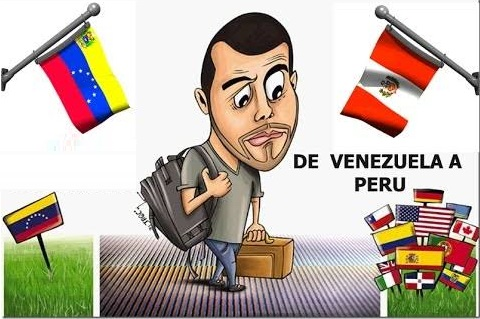

julio 19 del 2019
Tips Para Emigrar de Venezuela a Perú
Emigrar requiere de una buena planificación. Para lograr establecernos en el menor tiempo posible debemos ser realistas, evaluar costos y probabilidades. Muchas personas escogen vivir en Perú porque ciertamente hay buenas oportunidades de trabajo para inmigrantes. Ademas, es un país muy hermoso, con buena comida y recepción agradable para los extranjeros.
El sueldo mínimo en Perú es de S/930 mensuales que son unos $273. Esto pudiera ser poco pero buscando buenas oportunidades, haciendo un presupuesto acorde a tus necesidades mínimas y trabajando duro, puedes vivir en Perú sin mayores problemas
Diciembre 8 del 2019
Proyecto Comunitario Comedor Popular Matsue Fujimori
Obra social
El equipo de Ventas II de la sede Lima Centro de la fundación Forge, es un equipo en el cual se integran miembros de Venezuela y de Perú,, gracias a la iniciativa de HIAS y FORGE. Siendo una mezcla cultural, es un equipo de trabajo el cual se enriquece gracias al aporte de cada integrante donde la cultura e ideologías se agregan a la balanza dándonos un equilibrio y una fuente de enriquecimiento poderosa. El equipo de ventas y atención al cliente pone como meta la integración y el fortalecimiento de cada uno de nosotros generando un ambiente de apoyo multidireccional más allá del origen demográfico. Por ello decidimos trabajar en este proyecto comunitario.
Para nuestro Proyecto Comunitario buscamos realizar una obra social que tenga impacto en la comunidad, y nos avocamos a realizar la reestructuración del comedor popular Matsue Fujimori ya que se encontraba en un estaba de precariedad insostenible.

Carlos Romano
Estudiante Ing. de Sistemas
Actualmente me encuentro cursando el sexto semestre de Ing en Sistemas soy un joven emprendedor, visionario y creativo.